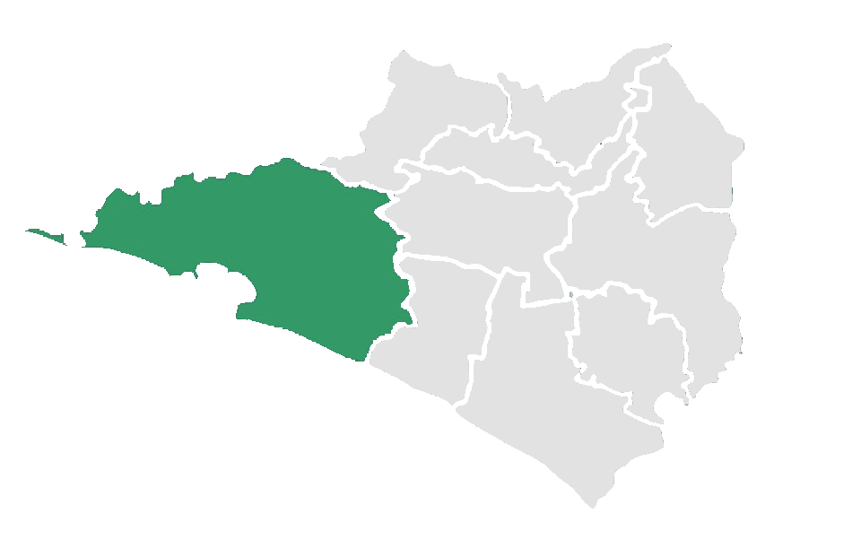
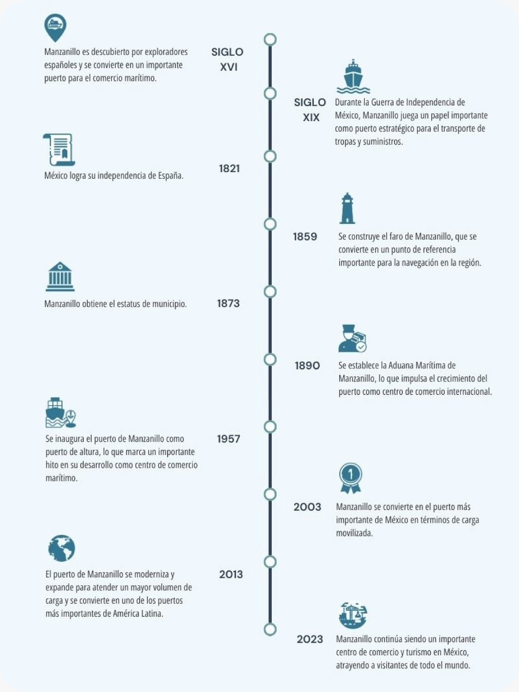

Manzanillo a través de los años

Manzanillo, ubicado en el estado de Colima, es un lugar clave gracias a su puerto comercial que conecta con el comercio nacional e internacional, además es un atractivo destino turistico con hermosas playas bañadas por las cristalinas aguas del Pacífico. Este paraíso costero se encuentra a 4 escasos metros sobre el nivel del mar a lo largo de su malecón.

{% include '../footer.html' %}
{% endblock %}